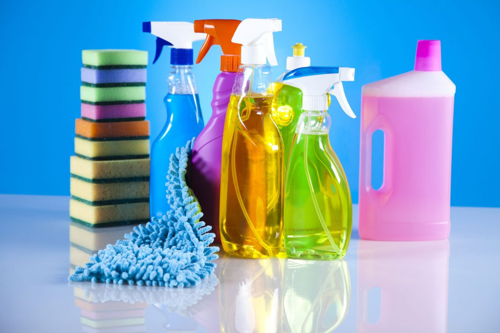
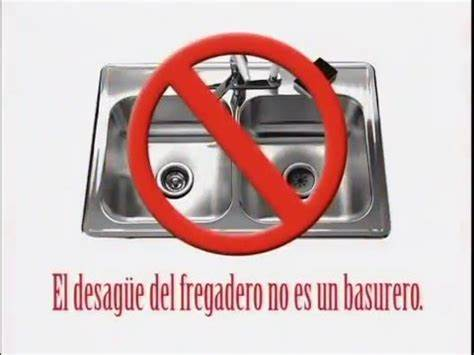
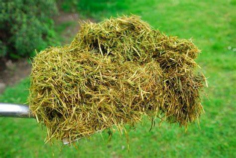
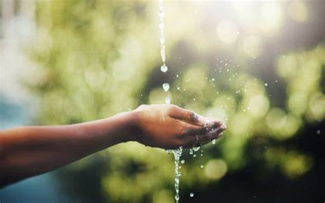
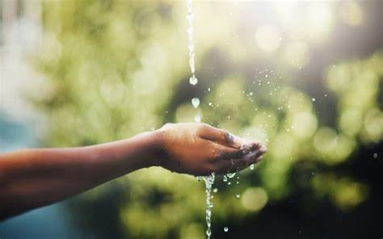

¿Cómo podemos arreglar la calidad del agua?
|

Deseche los productos químicos tóxicos correctamente |

No vierta aceites y grasas por el desagüe |

Nunca arroje desechos, como recortes de césped u hojas, a lo largo de las orillas de los arroyos |
 Reducir el consumo de plásticos. |
 Desechar correctamente los residuos. |


 
